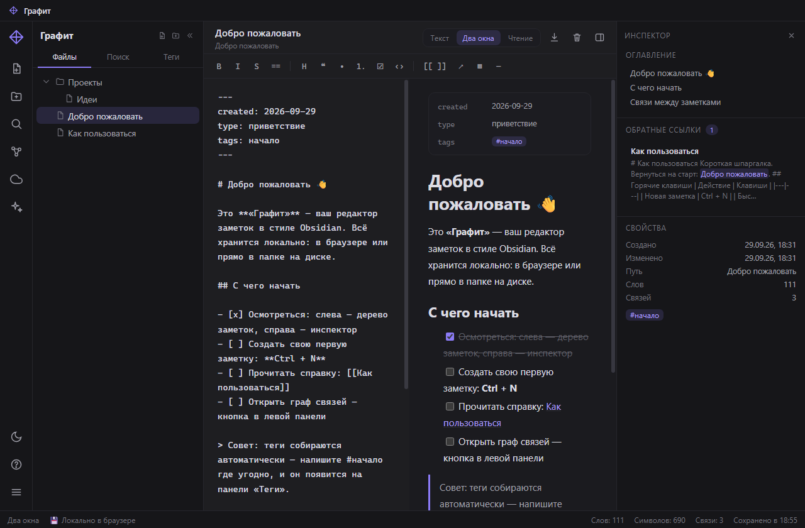
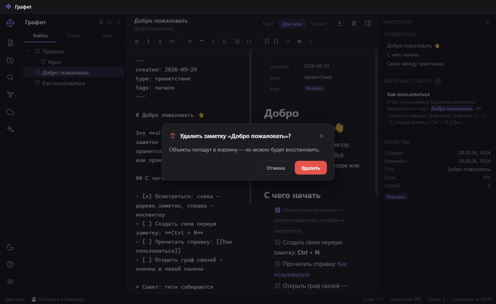
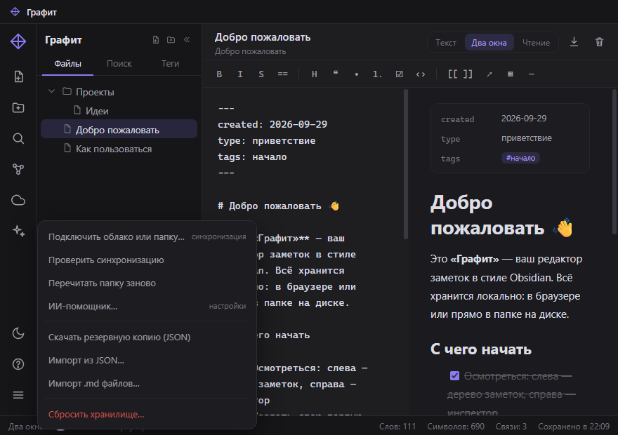

Заметки, которые живут в ваших файлах
«Графит» — редактор заметок в стиле Obsidian: Markdown, вики-ссылки, граф связей, облачная синхронизация и ИИ-помощник. Настоящая программа для Windows и веб-версия. Без аккаунтов и подписок.

Возможности
Файлы остаются вашими
Заметки — обычные .md-файлы в папке на компьютере. Открываются в Obsidian, VS Code, «Блокноте». «Графит» ничего не запирает.
Облако — почти любое
Подключите папку Яндекс.Диска, Google Drive, Dropbox, OneDrive или Nextcloud: клиент облака сам синхронизирует её между устройствами. Без токенов и паролей.
ИИ-помощник
Подсказки по ходу письма: опечатки, структура, формулировки, определения. Локальные модели через Ollama или любой OpenAI-совместимый сервис — ключи только у вас.
Скорость мысли
Мгновенный поиск по всем заметкам, быстрый переход по Ctrl+O, теги и граф связей. Горячие клавиши работают в любой раскладке.
Тёмная и светлая
Две выверенные темы — включая фирменные диалоги вместо системных окон и системные кнопки в цвет интерфейса.
Без аккаунтов
Никаких регистраций, подписок и телеметрии. Работает офлайн — сеть нужна только для облака и ИИ, и то по желанию.
Как это устроено
Выбираете папку
Обычная папка на диске или внутри облачного клиента. Можно подключить сразу несколько устройств к одной папке.
Пишете
Markdown, вики-ссылки [[как в Obsidian]], чек-листы и таблицы. Всё сохраняется мгновенно — файлами на диске.
Синхронизируется
Облачный клиент разносит файлы по вашим устройствам. С телефона заметки открываются любым Markdown-редактором.
Посмотрите вблизи


Что дальше
- Быстрая заметка из любой программы — сделано в 0.3.0: значок в трее и клавиша Ctrl+Alt+N.
- Мгновенный подхват изменений папки — сделано в 0.4.0: изменения из облака появляются сразу.
- Подсказки ИИ прямо в строке — серый «призрачный» текст, который принимается клавишей Tab.
Скачать
Портативная версия
Один .exe-файл, ничего не устанавливает. Двойной клик — и программа открылась. Можно носить с собой на флешке.
Скачать portable ~95 МБ · без установкиУстановщик
Обычная установка как у любой программы: ярлыки в «Пуск» и на рабочем столе, аккуратное удаление.
Скачать установщик ~96 МБ · Windows 10/11Веб-версия
Ничего скачивать не нужно — «Графит» откроется в браузере. Заметки хранятся локально в браузере или в подключённой папке.
Открыть в браузере Chrome, Edge и другие